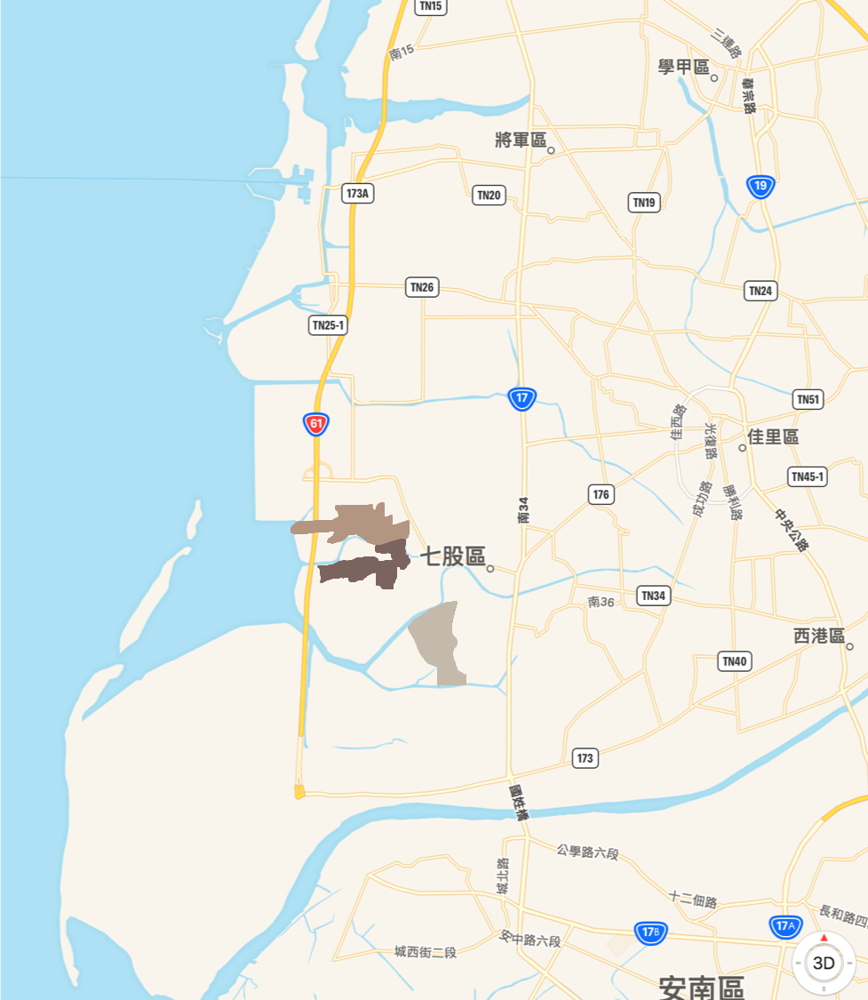
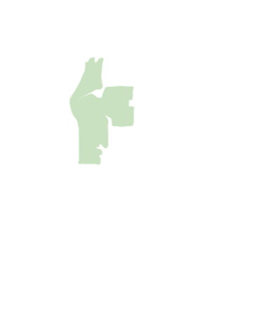
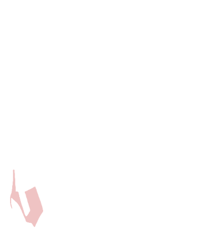
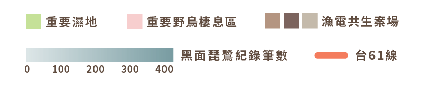

七股正在上演的漁電共生是全球首創的願景。
根據行政院農業委員會漁業署民國108年統計，台灣各地魚塭總面積約3萬公頃，且超過半數在日
照時間較長的中南部地區。
漁電共生構想在魚塭上裝設太陽能板、一地多用，讓狹小的台灣擠出土
地，增加太陽能板覆蓋率，進而提升再生能源的發電量。
近八年，台灣的再生能源發電 量共增長44億度，太陽能的發
電占比則逐年上升。總統蔡英 文推動能源轉型政策，喊出民
國114年綠能發電占比達20% 的口號；同年度，光電預計要占
再生能源的發電量高達四成， 且裝置容量至少20GW（十億瓦）。太陽
能極可能是未來的綠電主力。
太陽光電分為屋頂型與地面型二類型，漁電共生屬於地面型。原政策規劃認為，地面型光電設施可大規模、大面積推廣，因此寄予厚望。不過，目前業者圈設的案場受到不少地方聲浪反彈而踩剎車。因此，經濟部於108年重新調整二者的容量配比（註），調降地面型光電的目標容量。建置地面型光電設施所需土地量龐大。政府在制定新型態綠能政策的同時，是否已有完善的土地規劃？

漁電共生一片美意，盼推展再生能源與養殖漁業升級，讓綠電
與魚塭生態共榮。
然而，選址未經審慎評估，反讓光電業者與當地養殖戶之間形成拉鋸。
而七股已成為全台各處地面型光電設施的縮影。
不再「黑琵」？太陽能板建置恐不利七股生態



